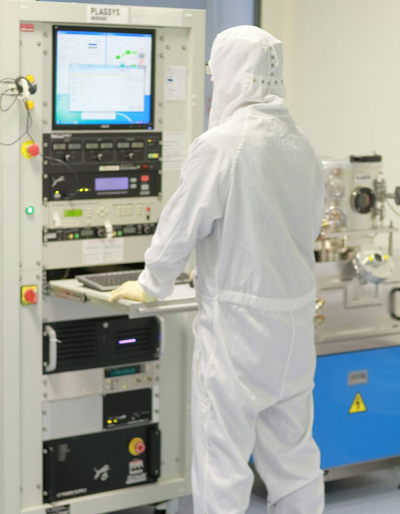
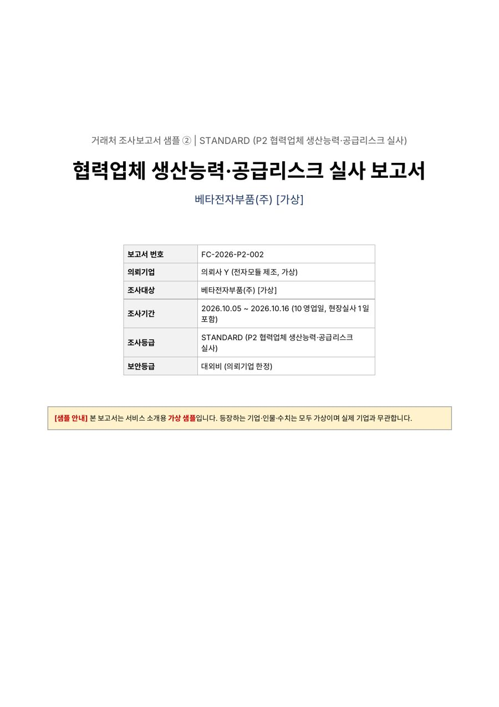
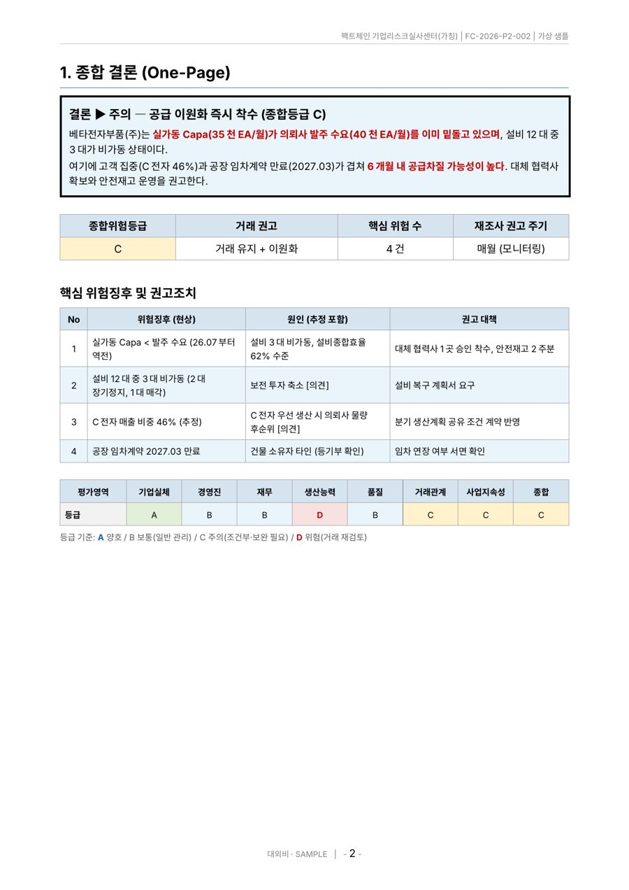

Manufacturing Supply Chain Fact-Finding
사실을 먼저 아는 것이
경쟁력입니다.
거래처·협력업체·해외 협력사의 실체와 리스크를 현장과 데이터로 확인하여, 경영진의 결정을 사실로 뒷받침합니다.
종합 위험등급물량 확대 가능
Check Point
중요한 결정 전, 확인하셨습니까?
서류와 소개만으로 내린 결정이 공급 차질과 손실로 돌아오는 순간이 있습니다.

Why K1 Fact Finder
현장을 아는 사람이 조사하면,
리스크가 보입니다
현장을 아는 실사
설비·생산능력·설비종합효율·품질체계를 직접 보고 생산능력의 진위를 판단합니다.
반도체 제조 현장 · MES 구축 경험데이터를 아는 조사
ERP/MES 데이터, 기준정보, GS1 식별코드로 이상징후와 기업 실체를 검증합니다.
SCM 컨설팅 · 기준정보 · GS1해외 현지 실사
해외 제조 현장 경험과 네트워크로 현지 협력사의 실체와 지배구조를 확인합니다.
해외 제조법인 현장 컨설팅
EXPERTISE검증된 현장 경력
Services
여섯 가지 서비스로 공급망의 사실을 확인합니다
조사 범위와 등급(BASIC · STANDARD · PREMIUM)에 따라 맞춤 견적을 드립니다.


Report
결론부터 보여드리는
의사결정용 보고서
경영진이 한 장만 보고도 판단할 수 있도록, 결론과 근거를 분리해 정리합니다.
- 1쪽 종합 결론종합 위험등급 · 거래 권고 · 핵심 위험과 대책
- 영역별 조사 결과실체 · 경영진 · 생산능력 · 거래관계 · 법률 공개정보
- 확인된 사실 vs 추정·의견모든 항목에 근거(정보원)를 함께 명시합니다
※ 가상 기업으로 작성한 예시이며, 실제 기업과 무관합니다.
Process
조사는 7단계로, 범위와 적법성을 먼저 합의합니다
금지행위 확인서
현장·의뢰인 자료
데이터 분석
사실·의견 분리
권고 대책
Principles
5대 조사 원칙
사실조사의 신뢰는 방법의 정당성에서 시작됩니다.
합법적 조사
공개정보 · 동의 기반 실사 · 적법하게 제공된 자료만 사용합니다
개인정보 보호
법인 중심으로 조사하며, 목적 범위 내에서 최소한으로 다룹니다
사실과 의견의 구분
확인된 사실과 추정·의견을 분리해 근거와 함께 표기합니다
비밀유지
계약상 비밀유지 의무, 자료 반환·파기 확인서를 발행합니다
조사범위 사전합의
합의한 범위 밖은 조사하지 않으며, 변경은 서면으로 합의합니다
FAQ
자주 묻는 질문
조사 비용은 어떻게 정해지나요?
조사 범위 · 등급(BASIC · STANDARD · PREMIUM) · 지역에 따라 달라집니다. 무료 30분 상담에서 목적을 확인한 뒤 항목 · 기간 · 비용을 서면 견적으로 드립니다. 출장 · 통번역 · 외부 전문가 비용은 별도입니다.
조사 기간은 얼마나 걸리나요?
협력업체 생산능력 실사는 약 10영업일(현장실사 포함), 해외 협력사 실사는 약 15영업일(현지 방문 포함)이 기준입니다. 공급망 프로세스 사실조사는 데이터 범위에 따라 협의합니다.
조사 대상 회사가 조사 사실을 알게 되나요?
공개정보 조사는 대상에게 알리지 않고 진행합니다. 현장실사는 대상 회사의 동의와 협조를 받아 진행하며, 신분을 속이는 위장 · 잠입 방식은 사용하지 않습니다.
어떤 방법으로 조사하나요? 합법적인가요?
공개정보 · 동의 기반 현장실사 · 의뢰인이 적법하게 보유한 자료만 사용합니다. 미행 · 위치추적 · 감청 · 무단 전산 접속 등 위법한 방법은 일절 사용하지 않으며, 조사 범위와 적법성을 계약 전에 서면으로 합의합니다.
의뢰 내용과 제공한 자료는 어떻게 보호되나요?
계약서에 비밀유지 의무를 명시하고, 조사 종료 후 요청 시 자료를 반환 · 파기하고 파기 확인서를 발행합니다. 첫 문의 단계에서는 민감한 내부자료를 보내지 않으셔도 됩니다.
해외(베트남 등) 협력사도 조사할 수 있나요?
가능합니다. 해외 제조법인 현장 경험과 현지 네트워크를 바탕으로 현지 기업등록 · 지배구조 확인과 현장 방문 실사를 수행합니다.
특정 개인에 대한 조사도 가능한가요?
아니요. 특정 개인의 소재 · 연락처 탐지나 사생활 조사는 하지 않습니다. 조사는 법인(기업)과 그 사업 활동을 중심으로 합니다.
보고서를 소송 증거로 쓸 수 있나요?
보고서는 확인된 사실과 추정 · 의견을 구분해 정리한 사실관계 보고서입니다. 법적 판단과 증거능력은 변호사의 검토가 필요하며, 필요 시 변호사 · 전문기관과 협업합니다.